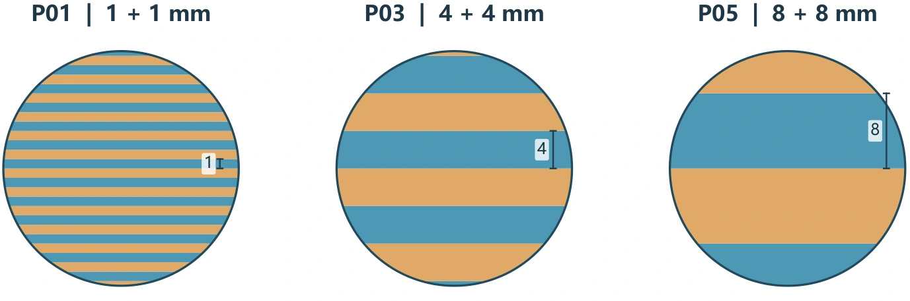
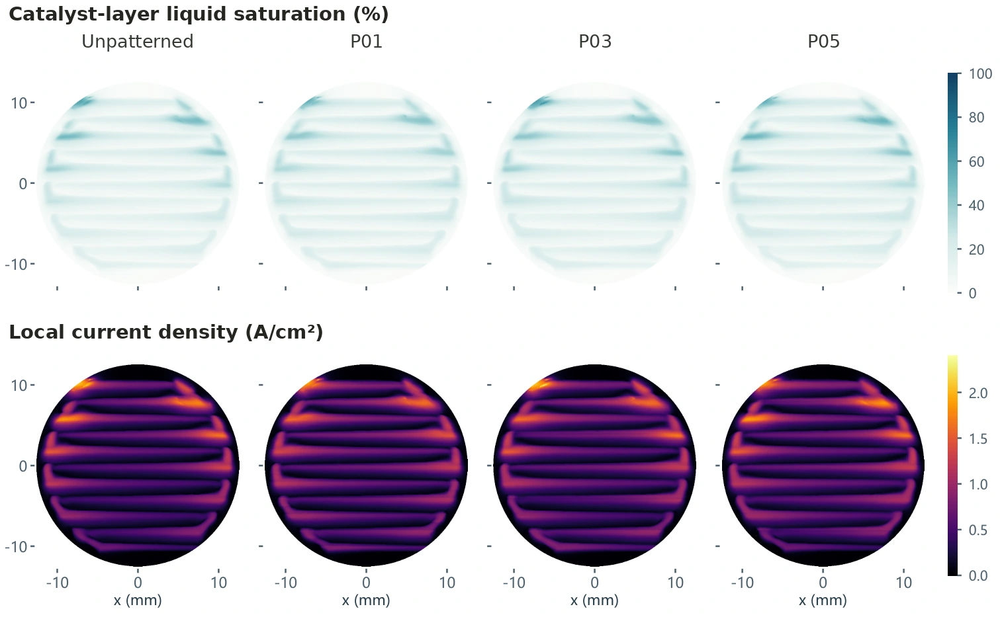

Multiphase CFD
Regenerative fuel cell flow fields
A unitized regenerative fuel cell (URFC) splits water to make hydrogen in electrolyzer mode and consumes hydrogen to generate electricity in fuel-cell mode. I used multiphase simulations to evaluate how one porous transport layer can manage liquid water in both modes.
Testing three wetting patterns
I built a parametric, multilayer model of the circular cell and generated structured meshes for parallel and serpentine channels. I used a Fluent user-defined function to assign alternating contact angles to the oxygen-side porous transport layer (PTL), changing the local capillary pressure.
I analyzed 16 simulated cases. Each combination of channel layout and operating mode included one unpatterned reference and three stripe widths.


Serpentine electrolysis showed the largest gain
At 1.6 V, the widest stripes (P05) raised simulated current density from 0.448 to 0.488 A/cm², an 8.79% increase over the unpatterned serpentine electrolyzer case. At the tested fuel-cell voltage of 0.6 V, the largest improvement was 0.46%.
| Operating case | P01 | P03 | P05 |
|---|---|---|---|
| Parallel electrolysis | +1.87% | +1.70% | +1.65% |
| Serpentine electrolysis | +4.57% | +6.91% | +8.79% |
| Parallel fuel cell | +0.13% | −1.26% | −1.76% |
| Serpentine fuel cell | +0.26% | +0.46% | +0.15% |
Each row has its own baseline and operating conditions. The percentages compare patterns within a row.
Where the water went
In serpentine electrolysis, P05 reduced the share of catalyst-layer volume below 10% liquid saturation from 45.1% to 38.8%. Average PTL saturation stayed near 26%. The volume-weighted coefficient of variation of the reaction current density fell from 0.80 to 0.74, indicating a more uniform reaction.


Choosing a PTL for both modes
For parallel channels, the fine P01 stripes improved current in both modeled modes. For serpentine channels, P03 gave the largest fuel-cell gain and P05 gave the largest electrolysis gain. I would carry both serpentine candidates forward under matched conditions to decide which pattern to use in the shared PTL.
These steady operating points support pattern screening. Evaluating round-trip efficiency requires mode-switching tests that track hydrogen production and consumption alongside energy input and output.